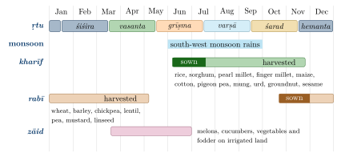

Chapter 9: Crops and Seeds¶
The fields of the subcontinent have never grown a single, fixed set of crops. Some plants were brought into cultivation within South Asia; many more arrived from south-west Asia, Africa, China, Southeast Asia and, after 1500, the Americas, and were then reshaped by generations of farmers into local varieties suited to particular soils, rains and tastes. This chapter surveys the principal crops: cereals, pulses, oilseeds, sugarcane, cotton, spices, fruits and vegetables. It then turns to the reckoning of seasons, to rotation and mixed cropping, and to the selection, treatment, storage and exchange of seed. Archaeobotanical evidence for the beginnings of farming is treated in Chapter 2; the processing of grain, oil and sugar in Chapter 14; and pests, livestock integration and trees on farms in Chapter 10.
9.1 A Region of Domestication and of Introduction¶
The Russian botanist N. I. Vavilov (1887–1943) placed the Indian region among the handful of world “centres of origin” of cultivated plants that he defined in the 1920s and 1930s. He credited it with rice, several pulses, sugarcane, the Old World cottons, the cucumber, a number of tropical fruits and several spices (Vavilov 1951). Vavilov’s method was to locate the regions where a crop showed the greatest varietal diversity and to treat these as its homeland. Later work showed that a centre of diversity need not be a centre of origin; a crop may become most varied far from where it was first domesticated, and several “centres” turned out to be broad zones rather than points (Harlan 1971). Vavilov’s scheme is therefore best read as a landmark in the history of crop science rather than as a current account of where crops began.
The present picture comes mainly from archaeobotany, whose evidence is set out in Chapter 2: in Dorian Fuller’s synthesis South Asia was not one centre but several, combining crops introduced from south-west Asia (from about 7000 BCE at Mehrgarh), from Africa (from about 2000 BCE) and from East Asia with local wild plants brought into cultivation in Gujarat, the southern Deccan, the Ganga plain and the north-west (Fuller 2006, 2011). The cultivated landscape that emerges is a mosaic of local domesticates and introductions, and it has stayed that way ever since. Table 9.1 summarises the probable origins of the principal crops by name.
| Crop | Early Indian name | Probable region of domestication |
|---|---|---|
| Barley, wheat | yava, godhūma | South-west Asia; in the subcontinent from c. 7000 BCE (Mehrgarh) |
| Lentil, chickpea, pea, linseed | masūra, caṇaka, kalāya, atasī | South-west Asia |
| Rice | vrīhi, śāli | East and South Asia; the history of the indica rices of India is debated (see Section 9.3) |
| Mung bean, urd, horsegram | mudga, māṣa, kulattha | South Asia |
| Pigeon pea | āḍhakī | Peninsular India |
| Sesame | tila | South Asia (north-west) |
| Tree cotton | karpāsa | South Asia |
| Sorghum, pearl millet, finger millet | (jowār, bājrā, rāgi) | Africa; in India from c. 2000 BCE |
| Sugarcane | ikṣu | New Guinea for the noble canes; the thin north Indian canes are thought to be hybrids |
| Black pepper, cardamom | marica, elā | Western Ghats |
| Maize, chilli, potato, groundnut, tobacco | — | The Americas; introduced from the 16th century CE |
9.2 Grain Classes in the Texts¶
Sanskrit texts do not describe crops in the categories of modern botany, but they do group them. The earliest lists are ritual. Barley (yava) is the grain of the Ṛgveda, where the word can also mean grain in general; rice (vrīhi) is first named in the Atharvaveda, and wheat (godhūma) only in later Vedic texts. The Yajurveda’s camaka litany (Vājasaneyi Saṃhitā 18), in which the sacrificer asks for each good thing “and for me”, names among its foods rice, barley, beans (māṣa), sesame, mung, khalva, the millets priyaṅgu, aṇu and śyāmāka, wild rice (nīvāra), wheat and lentil. The Bṛhadāraṇyaka Upaniṣad gives a compact list of ten cultivated grains:
Bṛhadāraṇyaka Upaniṣad 6.3.13
daśa grāmyāṇi dhānyāni bhavanti vrīhiyavās tilamāṣā aṇupriyaṅgavo godhūmāś ca masūrāś ca khalvāś ca khalakulāś ca
“There are ten cultivated grains: rice and barley, sesame and beans, millet and panic, wheat, lentils, khalva and khalakula.”
The last two terms are of uncertain identity; they are usually taken to be pulses (Olivelle 1998). The word grāmya (“of the village”) sets these cultivated grains against āraṇya, wild foods gathered from the forest, such as nīvāra.
Pāṇini (c. 4th century BCE) has rules forming adjectives for a field suited to a particular grain, such as vraiheya (a field fit for vrīhi), śāleya (for śāli) and maudgīna (for mung): evidence that farmers matched land and crop in their everyday vocabulary. The Arthaśāstra’s chapter on the director of agriculture (Section 2.11.1) sorts crops by sowing time, a classification discussed in Section 9.12.
The fullest classical scheme is medical. The chapter on food and drink in the Caraka-saṃhitā (Sūtrasthāna 27) arranges foods in twelve groups (varga). The first two are grains: śūkadhānya, “awned grains”, the cereals (rice, barley, wheat and others); and śamīdhānya, “pod grains”, the pulses (mung, urd, horsegram, lentil, chickpea, pigeon pea and others), with sesame also treated in this group. In Caraka’s list of things that are best of their kind (Sūtrasthāna 25), red śāli rice is the most wholesome of the awned grains and mung of the pulses (Sharma 1981). The Suśruta-saṃhitā’s corresponding chapter (Sūtrasthāna 46) distinguishes śāli, ṣaṣṭika and vrīhi rices, then a class of “lesser grains” (kudhānya) comprising millets such as kodrava, śyāmāka and priyaṅgu, and then the pulses (Bhishagratna 1907). These are dietetic categories, concerned with how foods act on the body; they are not crop manuals, but they preserve a valuable record of which grains were known and how they were ranked (see Volume 13, Āyurveda).
Tamil literature offers a different, landscape-based frame. In the Saṅgam poems and the tiṇai scheme of the Tolkāppiyam, the marutam tract is the land of wet paddy fields (nel), while the hill country (kuṟiñci) is the land of dry millet (tiṉai) fields guarded against parrots; crops are part of a whole poetic ecology rather than a dietetic list (Chapter 2).
9.3 Rice¶
9.3.1 Origins¶
Asian rice (Oryza sativa) has two main lineages, japonica, securely domesticated in the Yangtze basin of China, and indica, the dominant rice of India, whose history is debated. In Fuller’s model, local wild rice (Oryza rufipogon and O. nivara) was long cultivated in the middle Ganga plain before japonica arriving from the east hybridised with it after about 2000 BCE; early dates claimed for domesticated rice at Lahuradewa and elsewhere remain contested (Section 2.5; (Fuller 2011)). Rice cultivation spread through the Ganga plain in the first millennium BCE and became the staple of eastern and southern India.
9.3.2 Classical rice types¶
The texts distinguish rices by season, duration and quality. Śāli was the prestigious rice, generally a transplanted crop harvested in early winter (hemanta); Caraka names many kinds, among them raktaśāli (red), mahāśāli (“great”), kalama, dīrghaśūka (long-awned) and sugandhaka (fragrant) (Sharma 1981). Vrīhi usually denotes rainy-season rice ripening in autumn, rated in the medical texts as heavier and less wholesome than śāli. Ṣaṣṭika, “sixty-day” rice, was a quick-maturing type valued in diets for convalescents. Nīvāra, wild rice, was the food of forest ascetics in the epics and in Kālidāsa. Lexicons such as the Amarakośa add further names. The names do not map neatly onto modern varieties, and it would be a mistake to treat the medical texts’ lists as a census of rice diversity; they record the rices known to particular authors in particular regions.
Regional agrarian vocabularies preserve similar distinctions. In Bengal, rice crops are named by their seasons: āus (sown with the early rains and harvested in late summer or autumn), āman (the main transplanted crop, harvested in early winter) and boro (grown in the dry season on residual or lifted water). The Kṛṣi-Parāśara, which probably comes from eastern India and is centred on rice, gives instructions for raising seedlings, transplanting, weeding, draining the field and harvesting; the south Indian Kāśyapīya Kṛṣisūkti likewise devotes most of its agricultural material to rice (Majumdar and Banerji 1960; Sadhale 1999; Ayachit 2002). These texts are discussed in Chapter 3.
9.3.3 Landraces¶
Before the twentieth century, rice in India was grown as a very large number of landraces: farmer-maintained varieties adapted to particular water regimes, from upland fields watered only by rain to deep-water and floating rices of the deltas and the saline-tolerant rices of coastal Kerala, Goa and the Sundarbans. Grain colour (white, red, black), aroma, cooking quality, duration and ritual use all mattered to farmers. The rice scientist R. H. Richharia (1909–1996), director of the Central Rice Research Institute at Cuttack and later of a rice research institute at Raipur, reportedly assembled a very large collection of landraces from the Chhattisgarh region, and argued for breeding from local varieties rather than relying on imported high-yielding lines. Precise totals for the number of rice varieties “once grown” in India circulate widely but are not based on any agreed count.
Several regional landraces now carry Geographical Indication registrations, among them Navara and Palakkadan Matta in Kerala, Kalanamak in eastern Uttar Pradesh and Joha in Assam. The decline of landrace diversity after the Green Revolution, and the movements to conserve it, are discussed in Section 9.14.4 and Chapter 20.
9.4 Wheat and Barley¶
Barley and wheat are the oldest crops of the subcontinent. At Mehrgarh, naked six-row barley dominates the early plant remains, with smaller amounts of wheat (Meadow 1996). In the Harappan civilisation, both were winter-sown staples of the Indus plains; Harappan sites also yield a distinctive short, round-grained bread wheat, often classed as Indian dwarf or “shot” wheat (Triticum aestivum subsp. sphaerococcum) (Weber 1999; Possehl 2002). In the Ṛgveda, yava is the grain that is ploughed, sown, reaped and threshed; later Vedic ritual uses barley in many offerings, and wheat gradually rises in importance in the first millennium BCE. In the north and north-west, barley and wheat have remained the main winter crops, sown after the monsoon on the moisture left in the soil or with well and canal water, and harvested in spring. Barley, which tolerates poorer and more saline soil, was long the grain of the less prosperous.
9.5 Millets¶
“Millet” is not a botanical group but a name for many small-grained grasses. India grows two kinds. The first are millets domesticated within South Asia, among them kodo (Paspalum scrobiculatum, Sanskrit kodrava), little millet (Panicum sumatrense), browntop millet (Urochloa ramosa) and Indian barnyard millet (Echinochloa frumentacea); śyāmāka refers to one or more of these small millets. At Rojdi in Saurashtra, small millets were the main crops in the Harappan period, a reminder that Harappan farming was not uniform (Weber 1991). The second are introductions. Foxtail millet (Setaria italica, usually identified with priyaṅgu) and broomcorn or proso millet (Panicum miliaceum, cīnaka, a name that itself suggests a connection with China) were domesticated in northern China. Sorghum (jowār), pearl millet (bājrā) and finger millet (rāgi, nācanī) are African domesticates that reached India around 2000 BCE (Fuller 2006). Some reported early finds of finger millet in India have been questioned on identification, but the African origin of all three is not in doubt.
Millets became the staple grains of the drier Deccan, Rajasthan, Gujarat and the southern uplands, and of many hill and forest communities. The medical texts rank them as kudhānya, “lesser grains”; in social terms, millet was often the food of the poor while rice and wheat were the grains of status, a ranking that shaped diets for centuries. In the twentieth century, irrigated rice and wheat displaced millets over large areas. Interest has revived because millets suit rain-fed farming on light soils, and the United Nations General Assembly, on India’s proposal, declared 2023 the International Year of Millets. The nutritional profile of millets varies a great deal by species; claims for them should be made species by species and from current nutritional data, not from tradition.
9.6 Pulses¶
Pulses (Caraka’s śamīdhānya; dvidala or vaidala, “split” grains, in other texts) are central to Indian food and farming. Several were domesticated within the subcontinent: mung (Vigna radiata, mudga), urd or black gram (V. mungo, māṣa), horsegram (Macrotyloma uniflorum, kulattha), moth bean (V. aconitifolia) and pigeon pea (Cajanus cajan, āḍhakī), whose wild relative grows in the Eastern Ghats (Fuller 2011). Lentil (masūra), chickpea (caṇaka), pea (kalāya) and grass pea (Lathyrus sativus, khesārī) came from south-west Asia; cowpea and the hyacinth bean from Africa. Grass pea is hardy and drought-tolerant, but heavy dependence on it in times of scarcity causes lathyrism, a crippling neurological disease, and its history shows how a “famine crop” can harm the poorest who rely on it.
Pulses are legumes, and their roots carry nodules in which bacteria fix atmospheric nitrogen. That growing legumes improves the following crop was known empirically to many farming peoples, in India as in the Roman world; the mechanism was demonstrated in Europe in the 1880s. Indian farmers commonly sowed pulses with cereals or after them, as discussed in Section 9.13. No surviving Sanskrit text, however, sets out a theory of rotation for soil fertility.
9.7 Oilseeds and Fibre Crops¶
9.7.1 Oilseeds¶
Sesame (Sesamum indicum, tila) was domesticated in South Asia from a wild relative and is found at Harappan sites (Fuller 2006). Its importance is preserved in language: Sanskrit taila, “oil”, means literally “that which comes from tila”. Sesame and its oil are prominent in ritual, especially in offerings to the dead. Mustards and rapeseed (Brassica species; sarṣapa, with white mustard called siddhārtha) became the oil crops of the northern plains and Bengal. Linseed (Linum usitatissimum, atasī, umā) is a south-west Asian domesticate; in India it was grown mainly for oil. Safflower (kusumbha) gave both an oil and a red dye. Castor (eraṇḍa), an African plant, supplied lamp oil and medicine. The coconut (nārikela) was the oil and food palm of the coasts, and niger (Guizotia abyssinica), an Ethiopian domesticate, was an oilseed of hill and forest farmers. Groundnut, now one of India’s main oilseeds, is an American crop (Section 9.11). The oil press (ghāṇī) and the castes who worked it are discussed in Chapter 14.
9.7.2 Flax and cotton¶
Flax is the oldest plant fibre known to have been worked by humans; linen was woven in south-west Asia well before cotton, and Sanskrit kṣauma is often, though not certainly, understood as linen. Cotton, however, has a genuinely ancient history in South Asia. Mineralised cotton fibres preserved in a copper bead from a Neolithic burial at Mehrgarh, dated to around the sixth to fifth millennium BCE, are among the earliest evidence of cotton use anywhere (Moulherat et al. 2002), and cotton textiles are known from Mohenjo-daro (Kenoyer 1998). The Old World “tree cottons” (Gossypium arboreum, and the related G. herbaceum, whose earliest domestication may lie further west) were the cottons of India for millennia; cotton was independently domesticated in the Americas, and American upland cotton was promoted in India by colonial authorities in the nineteenth century. Since 2002 most of India’s cotton has been grown from hybrids carrying a gene from the bacterium Bacillus thuringiensis (Bt cotton), whose history and controversies are discussed in Section 20.9. Herodotus’ report of Indian trees that bore wool shows how Indian cotton struck the Greek world. Spinning, weaving and the cotton trade are treated in Volume 17, Śilpa–Kāru.
9.8 Sugarcane¶
The noble canes (Saccharum officinarum) were domesticated in New Guinea; the thin, hardy canes long grown in northern India (S. barberi) are thought to be hybrids between these and the wild S. spontaneum. Sugarcane (ikṣu) is named in the Atharvaveda and is a familiar crop in Sanskrit and Pali literature. What India gave the world was less the plant than the technology of making solid sugar. Indian texts of the early centuries CE distinguish grades of sugar product: the Arthaśāstra’s list of storehouse goods includes phāṇita, guḍa, matsyaṇḍikā, khaṇḍa and śarkarā, from thickened juice to crystalline sugar (Kangle 1965). Sanskrit śarkarā lies behind Persian shakar, Arabic sukkar and English “sugar”, and khaṇḍa behind “candy”. Chinese sources record that the Tang court sent envoys to Magadha in the seventh century to learn the method of sugar-boiling (Mazumdar 1998).
The Arthaśāstra ranks sugarcane as the least desirable crop for the state farms (Section 2.11.1). In the twentieth century the Sugarcane Breeding Institute at Coimbatore (founded 1912) crossed noble canes with S. spontaneum to produce hardier hybrid varieties that were grown far beyond India (Section 19.5.2). Jaggery-making and sugar-refining are treated in Chapter 14.
9.9 Spices¶
The Western Ghats are the home of black pepper (Piper nigrum, marica) and cardamom (Elettaria cardamomum, elā). Long pepper (Piper longum, pippalī), also a plant of the Indian region, was the older and more prized pepper in classical Indian pharmacology and was also traded westward. Ginger (Zingiber officinale; fresh ārdraka, dried śuṇṭhī) and turmeric (Curcuma longa, haridrā) are tropical Asian crops propagated from rhizomes; both have long histories of cultivation in South Asia. Not every “Indian spice” is Indian: true cinnamon is from Sri Lanka, while the Sanskrit tvak covers cassia barks as well; cloves are from the Moluccas and reached India by trade; cumin and coriander came from south-west Asia and the Mediterranean.
Black pepper was the principal Indian export to the Roman world, shipped from Malabar ports such as Muziris; the trade is treated in Volume 19, Vāṇijya and Samudra. Before the sixteenth century, the pungency of Indian cooking came from pepper, long pepper, ginger and mustard. The chilli (Capsicum) is a New World plant brought by the Portuguese in the sixteenth century; within a century or two it had become indispensable across the subcontinent.
9.10 Fruits and Vegetables¶
The mango (Mangifera indica, āmra), native to the region of north-eastern South Asia and Myanmar, is the fruit most celebrated in Indian literature. Other fruits of long South Asian cultivation include the jackfruit (panasa), jamun (jambū), Indian jujube or ber (badarī), Indian gooseberry (āmalakī), wood-apple (kapittha) and bael (bilva). Citrus fruits originated in the broad region of the eastern Himalayan foothills, north-east India, southern China and Myanmar. Bananas (kadalī) were domesticated in New Guinea and Southeast Asia but reached India early. Pomegranate (dāḍima) and grape (drākṣā) came from Iran and Central Asia, and the tamarind from tropical Africa, all in antiquity.
Among vegetables, the cucumber was domesticated in South Asia from a wild form of the Himalayan foothills, and the brinjal (vṛntāka) was domesticated in South or Southeast Asia. Gourds (bottle gourd alābu, ash gourd kūṣmāṇḍa, bitter gourd kāravella), yams, taro and leafy greens formed the everyday vegetable supply, much of it grown in kitchen gardens rather than fields. Many of the vegetables now thought typically Indian are later arrivals: the potato, tomato and chilli from the Americas, and cauliflower and cabbage from Europe in the colonial period. Medicinal plants are treated in Chapter 12 and Volume 13, Āyurveda.
9.11 Crops from the Americas and the Islamic World¶
The sixteenth century opened a new phase. Through Portuguese ports on the west coast and through overland trade, American crops entered India: maize, chilli, potato, tomato, tobacco, groundnut, pineapple, papaya, guava, custard apple, cashew, sweet potato and cassava among them (Achaya 1998; Randhawa 1980). They spread at very different speeds. Chilli and tobacco were adopted quickly; tobacco was being smoked at the Mughal court by the early seventeenth century, and Jahāngīr records in his memoirs that he tried to forbid it (Thackston 1999). Maize became a hill crop of the Himalaya and of parts of the north. The pineapple was known at the Mughal court. Cashew was planted along the western coast and later became a plantation and export crop. The potato and tomato became important only in the nineteenth century, when colonial administrators and missionaries encouraged them, and groundnut became a major field crop of the Deccan and Gujarat in the late nineteenth and early twentieth centuries. Cassava was promoted in Travancore in the nineteenth century and became a food of the poor in Kerala.
Debate: Pre-Columbian maize in India?
It is occasionally claimed that maize was grown in India before 1492, mainly on the basis of carved motifs on medieval temples that resemble maize cobs. Most archaeobotanists and art historians reject this: the motifs are more plausibly read as conventional ornaments (such as strings of pearls held by figures), and no maize remains have been found in any securely dated pre-Columbian Indian context.
A second current of introductions came through the Islamic world and the courts of the Sultanates and the Mughals. Persian and Central Asian fruits such as melons, grapes and new varieties of apricot and peach were cultivated in royal gardens, often with grafting; Bābur’s memoirs survey the plants of Hindustan, which he found wanting in the fruits of his homeland, and Jahāngīr describes fruits and grafts in his (Thackston 1996, 1999). The Mughal revenue system reorganised the agrarian calendar into two harvests and recorded crops in great detail (Section 9.12). In the colonial period, tea, coffee, rubber, cinchona and many other plantation crops transformed hill landscapes, with profound social and ecological effects. These histories are treated in Chapter 18.
9.12 Seasons and the Crop Calendar¶
Indian farmers grew crops in two main seasons long before the familiar terms kharīf and rabī existed. Those terms are Arabic in origin (kharīf, “autumn”; rabīʿ, “spring”) and entered Indian usage through Persian revenue practice under the Sultanates and the Mughals, which assessed land revenue harvest by harvest. Abū’l-Faẓl’s Āʾīn-i Akbarī tabulates revenue rates crop by crop for the rabī and kharīf harvests of the provinces (Abū’l-Faẓl 1873; Habib 1999). A third, minor summer season is called zāid (“additional”). These are not classical Sanskrit categories, and the Sanskrit agricultural texts do not use them. Figure 9.1 sets the three seasons and their main crops against the six seasons of the Sanskrit texts.

Sanskrit texts reckon agricultural time in other ways. The year is divided into six seasons (ṛtu): vasanta (spring), grīṣma (summer), varṣā (rains), śarad (autumn), hemanta (early winter) and śiśira (late winter). The Taittirīya Saṃhitā already observes that the crop ripens twice a year (Section 2.7). Crops are also named by their seasons: vrīhi and ṣaṣṭika by the rains, śāli by early winter, barley by spring. The Arthaśāstra’s director of agriculture classifies crops by sowing time: early-sown crops (pūrvavāpa) such as śāli and vrīhi rice, kodo, sesame and millets; middle-sown crops (madhyavāpa) such as mung and urd; and late-sown crops (paścādvāpa) such as safflower, lentil, horsegram, barley, wheat, pea, linseed and mustard (Kangle 1965). In effect this is the monsoon-sown and winter-sown division under other names. The text also advises sowing crops that need more or less water according to the rainfall of the year. Detailed calendars tied to the lunar mansions (nakṣatra) appear in the Kṛṣi-Parāśara and in regional farmers’ sayings; they are discussed in Chapter 3 and, for the calendar itself, in Volume 12, Khagola Jyotiṣa.
9.13 Rotation, Mixed and Relay Cropping¶
The strongest evidence for how Indian farmers combined crops comes not from Sanskrit texts but from observers of the late nineteenth and early twentieth centuries. Voelcker (Section 7.5.2) singled out mixed cropping, the alternation of cereals with pulses and the keeping of fields free of weeds as matters in which British agriculture had little to teach Indian cultivators (Voelcker 1893), and Howard (Section 10.7) found mixed cropping one of the most striking features of their practice (Howard 1940). These observers had their own agendas (Voelcker defending the cultivator against official blame, Howard building a case against chemical fertilisers), but their descriptions are detailed and based on fieldwork.
Practices that these and later observers describe include:
-
Rotation, alternating cereals with pulses or oilseeds on the same land from one season or year to the next; for example, a monsoon cereal followed by chickpea, lentil or another winter pulse.
-
Mixed cropping, sowing two or more crops together in the same field, either mixed in the seed or in alternate rows. Examples include sorghum or pearl millet with pigeon pea and other pulses on the black soils of the Deccan; wheat or barley mixed with chickpea in the north; and lines of mustard sown through fields of wheat.
-
Relay cropping, sowing a second crop into a standing crop before it is harvested. In parts of eastern and central India, lentil, grass pea or linseed seed is broadcast into rice shortly before the rice harvest, so that it germinates on the residual moisture (the practice is called utera in Chhattisgarh and paira in Bihar and Odisha).
-
Intercropping of long- and short-duration crops, such as the classic Deccan combination of sorghum with pigeon pea: the cereal is harvested at the end of the rains, after which the slower pigeon pea grows on through the winter on stored soil moisture.
-
Composite multi-crop systems in particular regions, such as the akkaḍi sālu rows of Karnataka, in which lines of pulses and oilseeds are sown through finger millet, and the bārahnājā (“twelve grains”) of the Garhwal and Kumaon hills.
The advantages farmers sought were several: insurance against the failure of any one crop in an uncertain monsoon, a spread of labour and harvest over the year, food and fodder of several kinds from one field, and, in the case of pulses, a benefit to the following crop. Agronomists have since studied these systems experimentally. Results depend heavily on the crops, soils and rainfall concerned, and general statements that mixed cropping always controls pests or yields more than sole cropping are not supported. The sources also contain no figures on the extent of these practices, and none are given here.
9.14 Seeds¶
9.14.1 Selection¶
Every farming household that saved its own seed practised selection, choosing the heads, pods or fruits from which next season’s seed would come. The Kṛṣi-Parāśara has a short section on seed. As Majumdar and Banerji and Sadhale render it, the text advises gathering seed in the months of Māgha or Phālguna (late winter), drying it thoroughly in the sun, and keeping it so that it is not mixed with other seed; mixed or uneven seed, it says, gives a poor crop (Majumdar and Banerji 1960; Sadhale 1999). Many farmers’ practices of seed testing (floating seed in water and discarding what floats, or germinating a sample on a damp cloth before sowing) are recorded in modern surveys of farming practice; they are sensible tests, but they are not classical prescriptions.
9.14.2 Treatment before sowing¶
The earliest detailed prescriptions for treating seed are in the Arthaśāstra’s chapter on the director of agriculture (2.24; Section 2.11.1). As Kangle translates it, grain seeds are to be exposed to mist by night and heat by day for seven nights, and pulse seeds for a shorter period; cuttings of sugarcane and similar plants are to have their cut ends smeared with honey, ghee and hog’s fat mixed with cowdung; bulbous roots are to be smeared with honey and ghee; and hard-coated seeds (asthibīja) with cowdung (Kangle 1965). Whether these instructions describe practice on the royal farms or a learned author’s ideal is uncertain, as with much of the Arthaśāstra (see Volume 18, Rājanīti and Dharmaśāstra).
The Vṛkṣāyurveda texts give many recipes for treating seeds of trees and garden plants before sowing, often with milk, ghee, honey and dung, and these are discussed in Chapter 4 (Sadhale 1996; Majumdar 1935).
9.14.3 Storage¶
Stored seed in a hot, often humid climate faces moisture, moulds, insects and rodents. Farmers’ storage practices, recorded across India in colonial and modern surveys, include:
-
drying seed thoroughly in the sun before storage;
-
storing it in earthen pots or jars with sealed mouths, in bins built of mud or of woven bamboo plastered with mud and dung, or in bundles and containers of straw;
-
mixing dried neem leaves, ash or sand with stored grain and seed;
-
keeping small seed lots in the kitchen roof or above the hearth, where smoke and warmth keep them dry;
-
in some dry regions, storing grain in lined underground pits.
Several of these practices are reasonable responses to the threats they address. Neem leaf and kernel contain compounds that deter or disrupt many storage insects (Schmutterer 1995), and keeping seed dry is the single most important factor in preserving its viability. Their effectiveness in any particular case depends on how they are carried out.
9.14.4 Exchange, landraces and conservation¶
Seed moved constantly: between neighbours, as part of marriage gifts, at fairs, along trade routes, and through the borrowing of seed from landlords and moneylenders at high rates of interest, a recurring source of indebtedness. In many communities, selecting and storing seed has been women’s work, and women’s knowledge of varieties has been an important, if little recorded, part of agricultural expertise. The result of continual selection and exchange was a large stock of landraces in every major crop: genetically diverse, locally adapted populations, rather than uniform varieties.
From the 1960s, the spread of high-yielding varieties of wheat and rice, bred for response to irrigation and chemical fertiliser, replaced landraces over large areas (Chapter 20). Collections of traditional varieties were made, partly in response, by national and international gene banks: the National Bureau of Plant Genetic Resources in New Delhi, the International Crops Research Institute for the Semi-Arid Tropics near Hyderabad (for sorghum, millets, chickpea, pigeon pea and groundnut) and the International Rice Research Institute in the Philippines, among others. Alongside these ex situ collections, farmers’ movements and non-governmental organisations have tried to keep landraces in cultivation. Examples include the Beej Bachao Andolan (“Save the Seeds” movement) in the Garhwal hills; the women’s groups of the Deccan Development Society in Telangana, which have promoted millet-based farming; Navdanya, founded by Vandana Shiva; and community seed banks in Odisha and elsewhere. Figures for their holdings vary widely between sources. The law on plant varieties and farmers’ rights, and the debates over patents on seeds and traditional knowledge, are discussed in Chapter 20 (Shiva 1991, 2001).
Summary¶
India’s crops have mixed origins. Wheat, barley, lentil and linseed came from south-west Asia; sorghum, pearl millet and finger millet from Africa; maize, chilli, potato, groundnut and tobacco from the Americas. Rice, several small millets, mung, urd, horsegram, pigeon pea, sesame, tree cotton, black pepper and cardamom have South Asian or partly South Asian origins, as archaeobotany has shown in revising Vavilov’s “centres”. Sanskrit texts group crops by ritual use, by sowing season (as in the Arthaśāstra’s early-, middle- and late-sown crops) and by dietetic value (Caraka’s awned grains and pod grains, Suśruta’s “lesser grains”); the categories kharīf and rabī come from Sultanate and Mughal revenue practice. The best evidence for rotation, mixed and relay cropping comes from colonial observers and later fieldwork. Seed was selected, treated (as the Arthaśāstra prescribes), stored with care, and exchanged, producing a large landrace diversity that the Green Revolution reduced and that gene banks and seed-saving movements now try to conserve.
Further Reading¶
Fuller (2006) is the standard synthesis of crop origins in South Asia. Achaya (1998) is a reference for the history of individual crops and foods. Randhawa (1980) gathers a great deal of material on the history of Indian agriculture, though it should be used critically. Voelcker (1893) remains the best contemporary description of Indian cropping practice in the late nineteenth century, and Habib (1999) covers crops and seasons in the Mughal period.